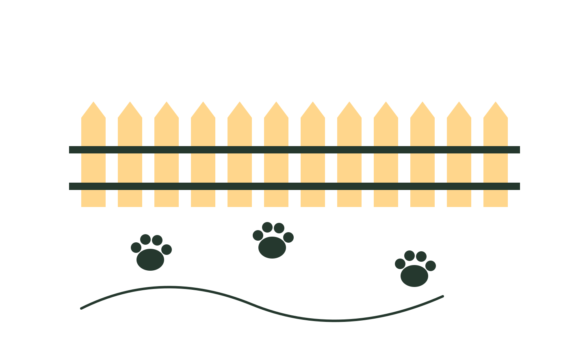
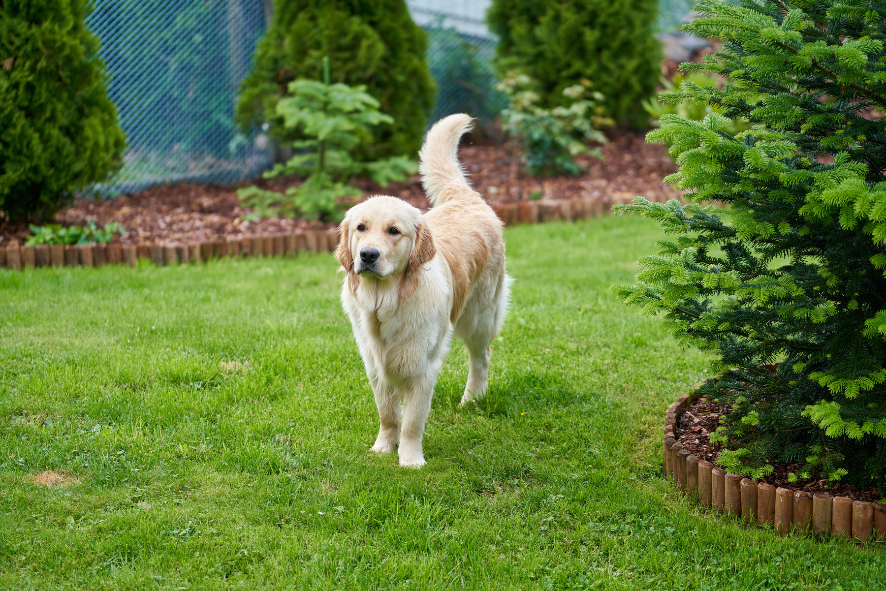
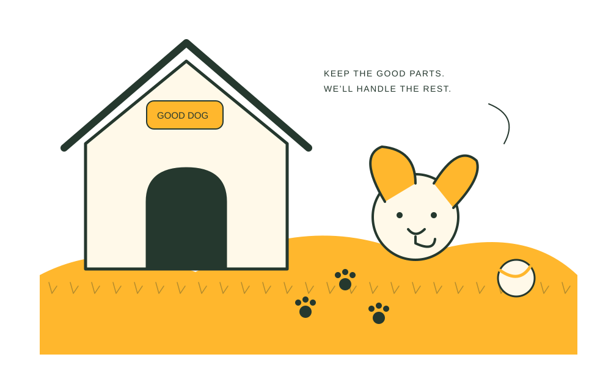
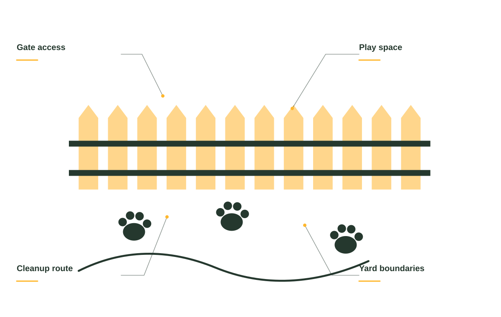
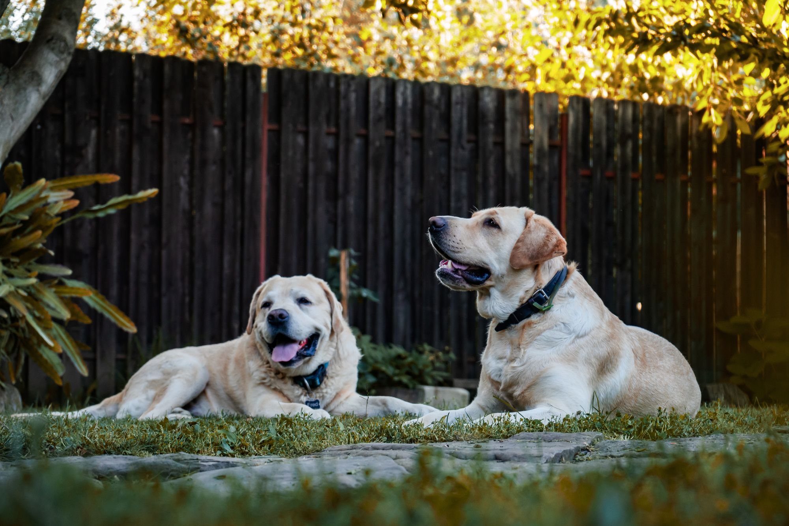
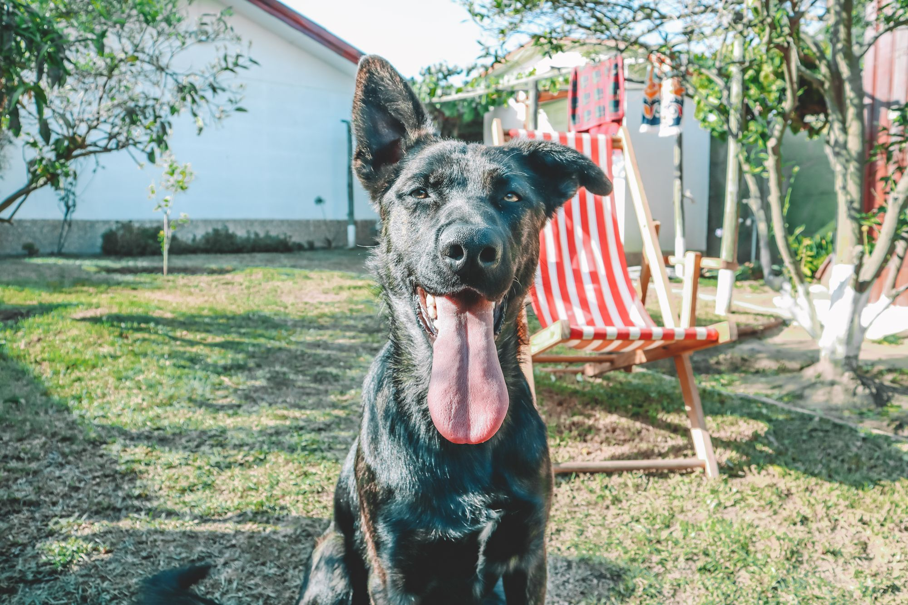
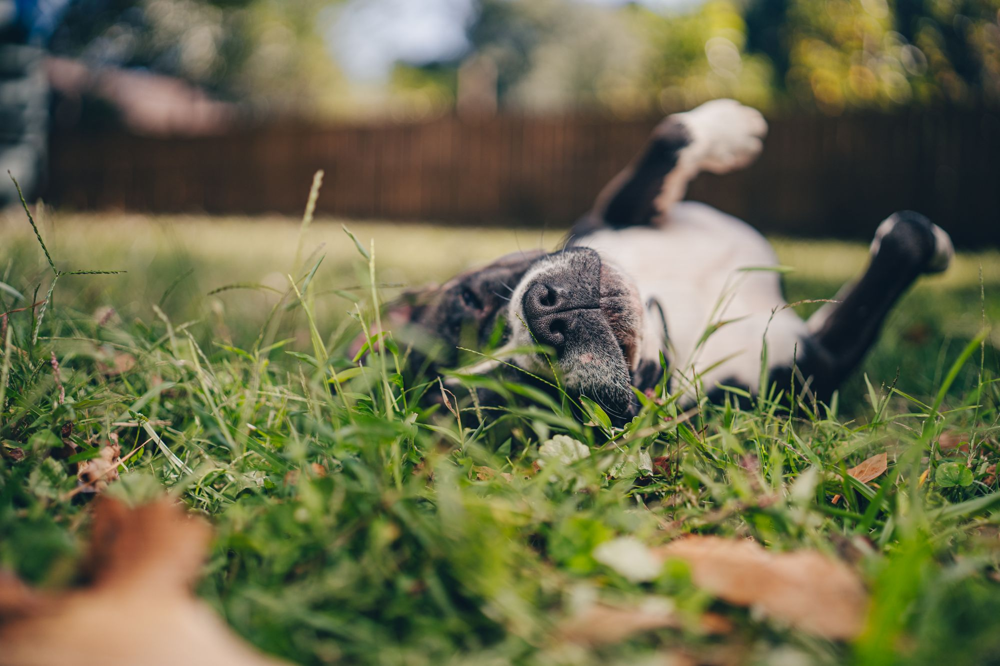
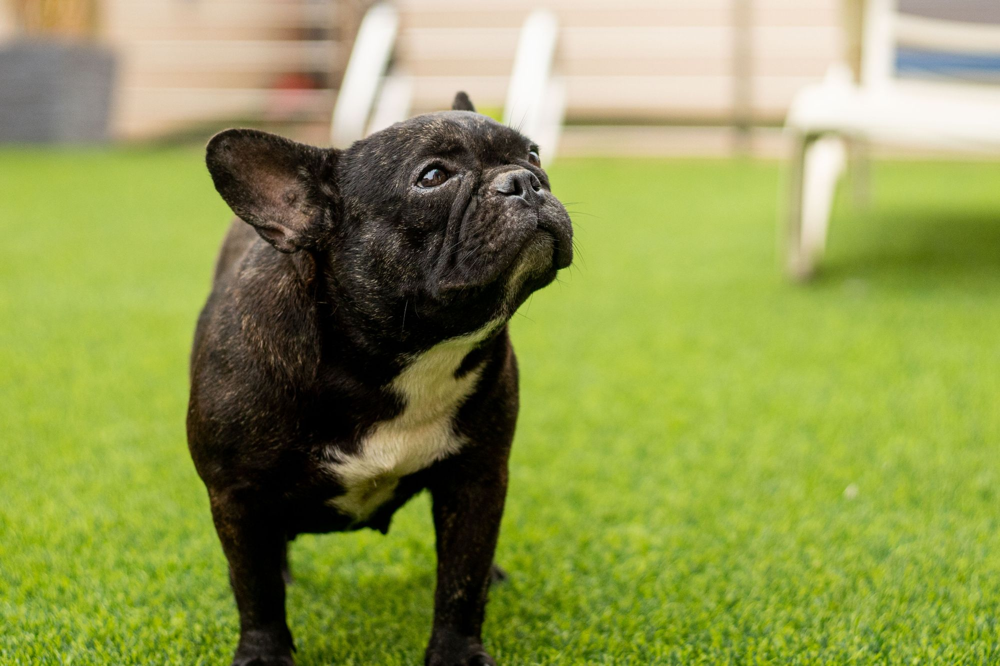
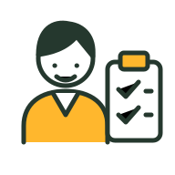
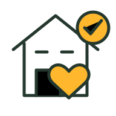

Recurring cleanup
Choose a regular cleanup plan around your household and dogs.

Dog waste cleanup for a yard that’s ready for the good part of having a dog.
Get your yard back ↗

Choose a regular cleanup plan around your household and dogs.
A fresh start when the yard needs some extra attention.
Ask about options for the areas that need a little extra care.
Practical waste cleanup for dog-friendly properties.
Every yard has its own rhythm. The number of dogs, the space they use, and how often you want help all shape a useful cleanup plan.

HAPPY YARD / THE DETAILS MATTERDiscuss a recurring cleanup schedule for the areas your dogs use most, with access and timing considered up front.
Share the size and condition of the yard so we can plan a focused cleanup visit.
Gates, pets, access, and the areas to include should be clear before the first visit.

More fetch. More bare feet in the grass. Less walking around with a bag. We help make the yard a place everyone can enjoy again.



Tell us about your dogs and the space they love.

Discuss a visit schedule and access to the yard.

Less on your list. More room for the fun stuff.
When you get in touch, a little context goes a long way. These are the details that help us start a useful conversation about your pet waste removal project.
Tell us what you have in mind ↗Tell us about how many dogs so the conversation starts with your situation.
A few details about yard size and layout help us understand what you need.
Share access and gates when you get in touch, including photos where useful.
Let us know about your preferred rhythm so the proposed scope reflects your priorities.
We can discuss access and gate instructions when arranging service. Let us know about any special requirements.
Tell us about your dog’s temperament and routine so we can agree on a safe plan for the visit.
Yes. A one-time cleanup can be a good way to get the yard ready before arranging recurring visits.